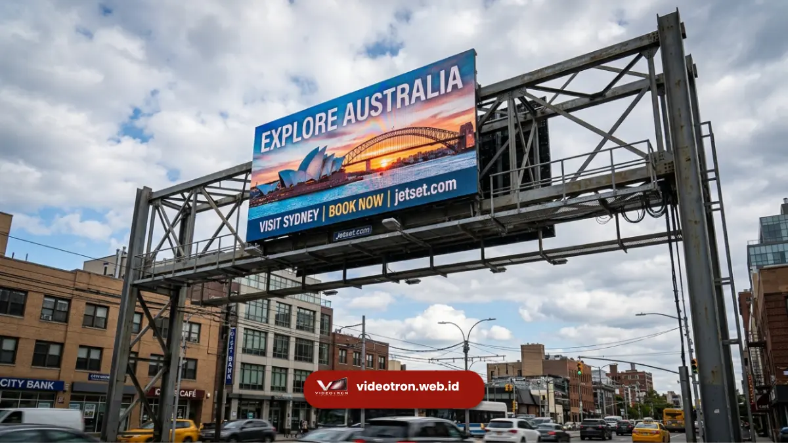

Design videotron adalah proses merancang tampilan visual, tata letak konten, dan spesifikasi teknis layar LED besar agar sesuai kebutuhan branding dan komunikasi sebuah instansi.
Layanan ini mencakup pemilihan resolusi, ukuran panel, hingga strategi konten agar pesan tersampaikan optimal. Bagi korporat yang ingin memesan design videotron custom, layanan ini tersedia melalui vendorvideotron.web.id.
- Design videotron mencakup perencanaan visual, teknis, dan konten sekaligus.
- Resolusi dan ukuran panel LED menentukan kualitas tampilan dari jarak tertentu.
- Videotron custom dapat disesuaikan dengan identitas brand korporat.
- Proses pemesanan meliputi konsultasi kebutuhan, survei lokasi, dan instalasi.
- vendorvideotron.web.id melayani konsultasi design videotron untuk berbagai skala instansi.
- 1. Apa Itu Design Videotron dan Mengapa Penting bagi Korporat
- 2. Elemen Utama dalam Design Videotron yang Efektif
- 3. Bagaimana Proses Design Videotron Custom Dikerjakan
- 4. Berapa Kisaran Biaya Design Videotron untuk Korporat
- 5. Kesalahan Umum dalam Memilih Design Videotron
- 6. Tips Merancang Design Videotron yang Maksimal
- 7. Mulai Wujudkan Design Videotron Korporat Anda
Apa Itu Design Videotron dan Mengapa Penting bagi Korporat
Design videotron adalah tahap perancangan tampilan dan spesifikasi teknis layar LED besar sebelum diproduksi dan dipasang. Elemen ini menentukan bagaimana konten korporat—logo, informasi produk, hingga materi promosi—ditampilkan secara jelas dan menarik di ruang publik maupun area gedung. Bagi korporat, videotron bukan sekadar layar, melainkan media komunikasi visual yang bekerja terus-menerus tanpa henti.
Design videotron yang baik memperhatikan tiga aspek utama: keterbacaan visual dari berbagai jarak pandang, daya tahan perangkat terhadap cuaca (khusus outdoor), serta fleksibilitas konten yang dapat diperbarui sesuai kebutuhan kampanye korporat.
Apa Saja Elemen Utama dalam Design Videotron yang Efektif
Elemen utama design videotron efektif meliputi pemilihan pixel pitch, ukuran layar, tata letak konten, dan kecerahan (brightness) yang sesuai lokasi pemasangan. Kombinasi elemen ini menentukan seberapa optimal pesan visual korporat tersampaikan kepada audiens.
Pixel Pitch dan Resolusi Tampilan
Pixel pitch adalah jarak antar titik LED pada panel videotron, dan menentukan seberapa detail gambar yang bisa ditampilkan.
Semakin kecil pixel pitch, semakin tinggi resolusi tampilan, namun umumnya semakin sesuai untuk jarak pandang yang lebih dekat.
Untuk videotron outdoor berskala besar yang dilihat dari jarak jauh, pixel pitch menengah hingga besar umumnya sudah cukup memberikan hasil visual yang tajam.
Tata Letak Konten dan Branding
Tata letak konten dalam design videotron korporat perlu selaras dengan identitas visual perusahaan, mulai dari warna, logo, hingga gaya tipografi.
Konten yang terstruktur dengan baik membantu audiens menangkap pesan dalam hitungan detik, mengingat sifat videotron yang biasanya dilihat sekilas oleh orang yang sedang bergerak atau lewat.
Kecerahan dan Ketahanan Perangkat
Tingkat kecerahan layar perlu disesuaikan dengan kondisi pencahayaan sekitar, terutama untuk videotron outdoor yang terpapar sinar matahari langsung. Selain itu, ketahanan perangkat terhadap cuaca—hujan, panas, dan kelembapan—menjadi faktor penting agar investasi videotron dapat digunakan dalam jangka panjang.

Panel LED modular yang dirancang khusus untuk kebutuhan design videotron korporat premium.Bagaimana Proses Design Videotron Custom Dikerjakan
Proses design videotron custom umumnya dimulai dari konsultasi kebutuhan, dilanjutkan survei lokasi, perancangan visual, hingga instalasi dan pengujian akhir. Setiap tahap dirancang agar hasil akhir videotron sesuai dengan tujuan komunikasi korporat.
Tahapan umum yang biasa dilalui:
- Konsultasi kebutuhan dan tujuan pemasangan videotron.
- Survei lokasi untuk menentukan ukuran, sudut pandang, dan jarak baca ideal.
- Perancangan desain visual dan simulasi tampilan.
- Produksi dan perakitan panel LED sesuai spesifikasi.
- Instalasi di lokasi serta pengujian kualitas gambar dan kecerahan.
Setiap tahap ini dapat berbeda durasinya tergantung skala proyek dan kompleksitas lokasi pemasangan.
Berapa Kisaran Biaya Design Videotron untuk Kebutuhan Korporat
Biaya design videotron pada umumnya dipengaruhi oleh ukuran layar, pixel pitch, tingkat kecerahan, serta kompleksitas instalasi di lokasi.
Karena variabel ini berbeda pada setiap proyek, kisaran biaya videotron korporat dapat bervariasi cukup signifikan antara satu kebutuhan dengan kebutuhan lainnya.
Untuk mendapatkan estimasi yang akurat sesuai kebutuhan spesifik perusahaan Anda, konsultasi langsung dengan tim teknis sangat disarankan agar spesifikasi dan anggaran dapat disesuaikan secara tepat.
Kesalahan Umum dalam Memilih Design Videotron
Beberapa kesalahan umum yang sering terjadi saat merancang videotron korporat antara lain mengabaikan jarak pandang audiens, memilih pixel pitch yang tidak sesuai lokasi, serta kurang memperhatikan ketahanan perangkat terhadap cuaca outdoor.
Kesalahan lain yang cukup sering ditemui adalah tata letak konten yang terlalu padat sehingga sulit dibaca dalam waktu singkat, serta kurangnya perencanaan konten jangka panjang yang membuat videotron cepat terasa monoton bagi audiens.
Tips Merancang Design Videotron yang Maksimal
Design videotron yang maksimal mempertimbangkan keseimbangan antara aspek teknis dan kebutuhan komunikasi brand. Berikut beberapa hal yang perlu diperhatikan:
- Sesuaikan ukuran dan pixel pitch dengan jarak pandang audiens.
- Gunakan palet warna dan tipografi yang konsisten dengan identitas korporat.
- Rancang konten yang ringkas namun mudah dipahami dalam hitungan detik.
- Pertimbangkan ketahanan perangkat terhadap kondisi cuaca setempat.
- Rencanakan pembaruan konten secara berkala agar videotron tetap relevan.
Mulai Wujudkan Design Videotron Korporat Anda
Design videotron yang dirancang dengan tepat mampu memperkuat citra korporat sekaligus menyampaikan pesan secara efektif kepada audiens luas.
Mulai dari pemilihan pixel pitch, tata letak konten, hingga ketahanan perangkat, setiap elemen berperan penting terhadap hasil akhir.
Bagi perusahaan atau instansi yang membutuhkan design videotron custom sesuai kebutuhan spesifik, tim vendorvideotron.web.id siap membantu proses konsultasi hingga instalasi.
Hubungi vendorvideotron.web.id untuk mendapatkan penawaran design videotron yang sesuai dengan kebutuhan dan anggaran perusahaan Anda.
Design videotron yang tepat memadukan aspek teknis seperti pixel pitch dan kecerahan dengan strategi konten yang selaras dengan identitas korporat.
Konsultasikan kebutuhan design videotron perusahaan Anda bersama vendorvideotron.web.id untuk mendapatkan solusi visual yang sesuai target dan anggaran.

Hawa Nadira
LED Technology Consultant dan Visual Educator
Konsultan dan spesialis solusi display digital berdedikasi tinggi yang fokus membagikan panduan edukatif mengenai penerapan teknologi layar LED videotron untuk kebutuhan interior modern di Indonesia.